我的职责通常是产品战略和设计方向的规划，很少参与具体的设计细节，但我一直相信基础设计技能对于设计思维的影响，以下五条是我认为页面设计最基础的技能要求。没有经历任何艺术教育的设计师（比如我）也可以通过对以下五项修炼的培养迅速提高基础设计能力。
草绘
无论前端技术发展成什么样，在自然交互界面没有大行其道，只要图形界面依然是交互设计的主流，网页设计的基础还是版式设计。换句话说，很多人的设计感不好来源于对于版式设计的基础并不了解。
在传统的印刷物或图形设计领域，一件作品的创造过程通常经历4个基础步骤：
- Sketch草绘：也叫做Thumbnail Sketch，通过大量的设计草绘逐渐形成设计概念（如下图）；
- Layout初版：初版主要构建基础的元素以及体现元素间的主次关系；
- Comp精版：在精版中一部分展示更多的细节；
- Finish完成：完成最终设计。
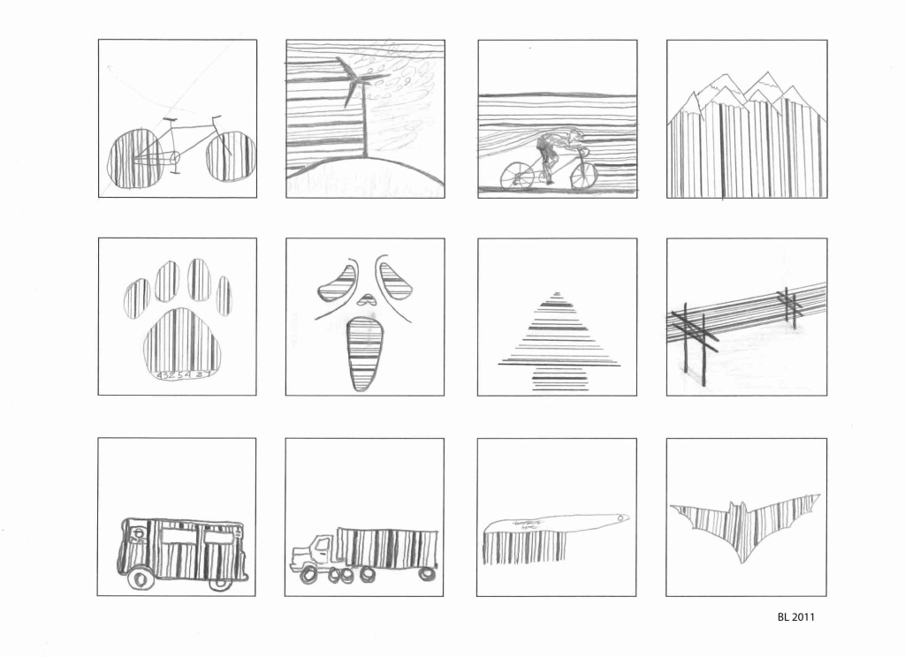
源于传统平面设计领域的页面设计同样也应该遵循草绘、初版、精版、完成的过程。可惜的是很多页面设计师因为种种原因，并没有养成从草图开始逐步细化的职业设计习惯。事实上，我只是从2012年时开始练习草绘的，在此之前我也有上手就是PS或者代码的习惯，下面这张图是我自己练习的第一张草绘图：
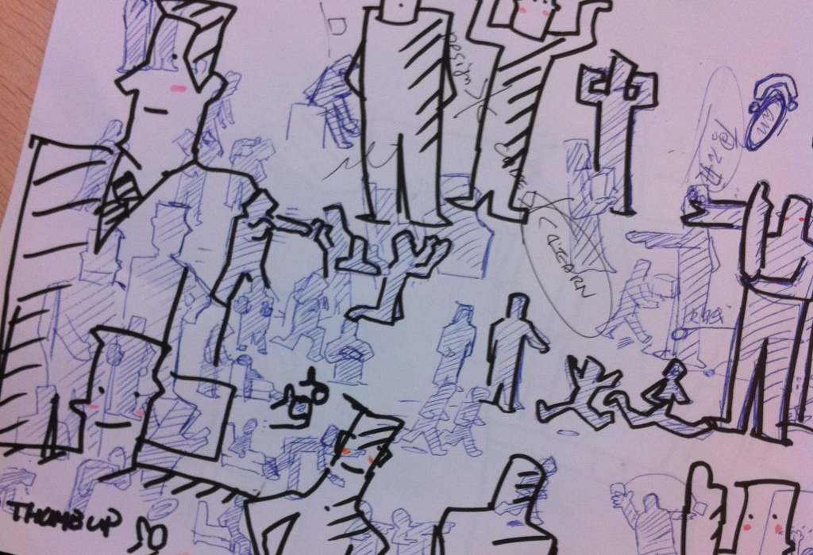
经过三个月的练习，逐渐可以达到草绘场景图、信息图、Sketchnote等水平，当场景图都能熟练表达的时候，绘制一个页面就变得非常简单了，如下面的图：
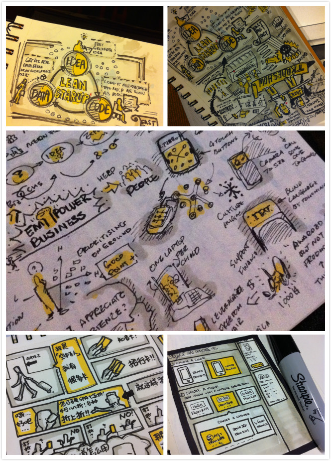
值得提的是我并没有接受过专业的美术训练，只是很小的时候喜欢画画而已，在短时间内，只要不断进行练习，相信在最多不到6个月的时间内，就能完全掌握草绘的技能。关于草绘，可以参考Alistpast的文章《Sketching: the Visual Thinking Power Tool》，在之前的文章中也提到了草绘重要的文具选择，请参考文章《敏捷UX文具指南》。
使用网格
草绘是最基础的页面设计技能，而对网格（或栅格系统）的使用更是被很多设计师忽视。同样作为平面设计重要的工具之一，早在1629年，法王路易十四命令成立一个管理印刷的皇家特别委员会，由数学家尼古拉斯·加宗（Nicolas Jaugeon）担任领导。委员会提出了新字体设计建议：以罗马体为基础，采用方格为设计依据，每个字体方格分为64个基本方格单位，每个方格单位再分成36小格，这样，一个印刷版面就由2304个小格组成。这是世上最早对字体和版面进行科学实验的活动。也是栅格系统的雏形（下图）。
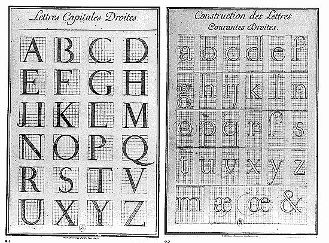
巧合的是，我一直推崇的水平网格单元正是8px，最初的想法是中文基础字符高度为12px，通常1.5倍行高正好是16px也就是两个网格高度，在这里并没有什么科学依据，也许8这个数字比较吉利吧。
网格使用主要是两个方向，一个是水平网格，用于控制纵向节奏（Vertical Rhythm）如下图的比较：
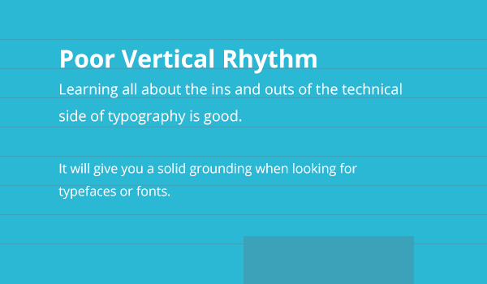
另一个是大家更熟悉的纵向网格，也叫做Grid System（如下图），因为960.gs等前端框架的流行，Grid System目前较为普遍，大部分设计师都懂得使用纵向的栅格规划页面结构。
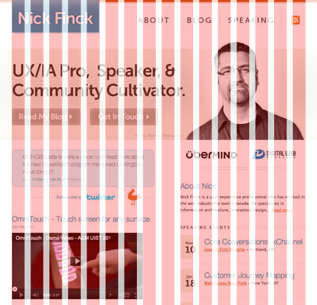
而真正规范的页面设计同样要考虑纵向页面栅格和纵向节奏，无论你使用Photoshop还是Sketch都可以较为方便地生成横向和纵向两个方向的辅助线，以Photoshop CC 2014为例，使用插件GuideGuide可以快速生成自定义的页面网格系统，如下图：
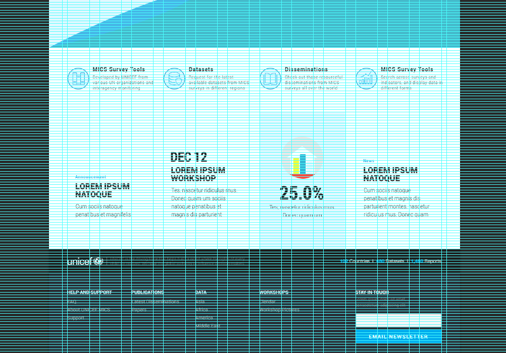
当我们看细节，每个页面元素的左边缘都和纵向辅助线对齐，同时观察元素高度、字体的行高、元素间的空隙、段落间距，都由横向网格进行规范，保证高度都是8的整数倍，以及纵向居中，以及如下图：
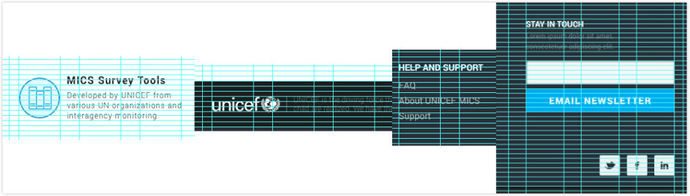
值得提醒的一点是，使用这样大规模的网格系统，一个页面做下来眼睛不残废也要半瞎，我特别贴心（这么贴心是不是让你特别想与我工作呢？请点击这里或者这里）地告诉大家在全局设置里可以更改网格的颜色，默认的Cyan蓝基本坑人，再将画板背景颜色改成浅灰色：
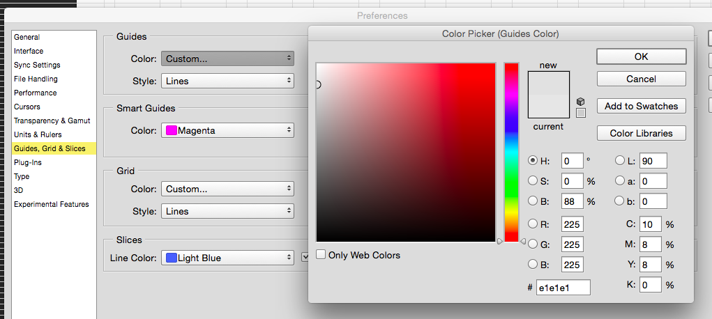
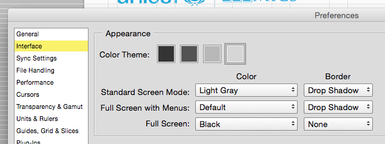
最后的操作界面看起来就舒服多了，多么的贴心。
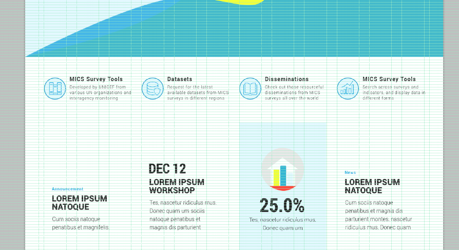
当然，最重要的快捷键是cmd+H，它帮助你快速切换是否显示网格。
使用网格是一种习惯，它的基本逻辑是：美也许还需要一些天赋和感觉，但是对齐这件事，是可以通过后天努力和细心以及一些工具完成的。
使用留白
罗伯特卡帕说：If your photographs aren't good enough, you're not close enough（照得不够好，靠得不够近），在页面设计的领域，这句话应该改为“设计得不够好，隔的不够开”——实际上，设计成功的决定因素往往在空白处。留白本身的含义其实并不是页面上空白的区域，而在于如何用更少的视觉元素表现足够的含义，比较下面两个表格：
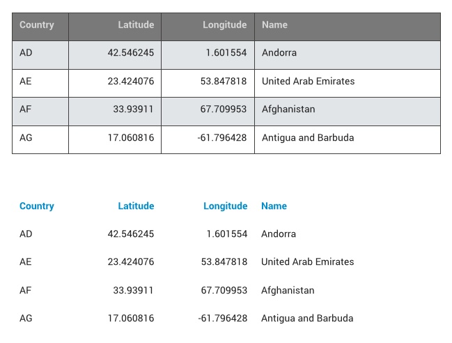
这就是空白的力量，它既减少了视觉元素的使用，同时提高了信息的可读性，当我们回头看看Google最新一次设计改版的变化（参考），最显著的便是空白的使用：
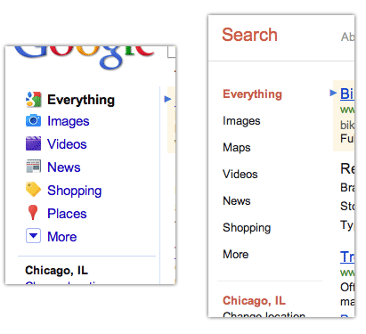
空白还可以赋予页面元素更多的含义，让你用简单的文字表现出从属关系，例如下面这个例子：
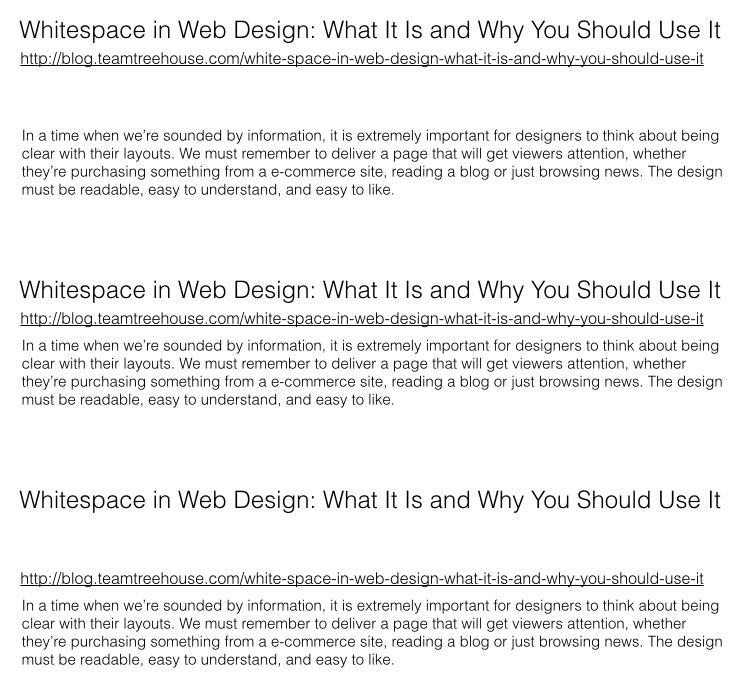
第一个例子中留白放在正文上部，标题和URL成为一体，URL成为标题的附属元素；第二个例子中不留白，三者成为了一体，看起来就像Google搜索结果；第三个例子留白放在了URL上面，URL变成了正文的一部分。
再从美学的角度，传统平面设计（下图）的经典设计原则亦是如此——视觉元素的功能是“辅助”内容本身，切勿喧宾夺主。回过头来看拟物化和扁平化风格的争执，我对此的观点是，至少在Web端，一定会向平面设计（Print）风格倾向，意味着阅读性内容的设计中一定会减少阴影、渐变、图标、浮动的使用，而更重视字体的使用、更丰富的排版方式、高质量图片、以及大量的留白。
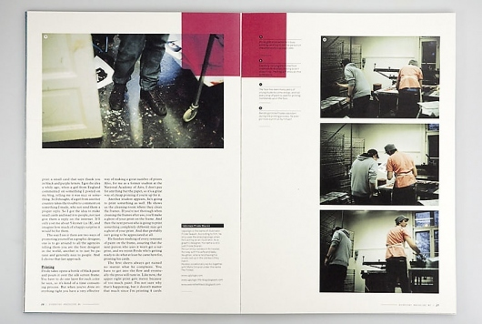
总而言之，学会使用留白，不但是提升信息传达效率、还是符合美学趋势的重要技能。
使用字体
字体才是内容与用户的交互界面，学会处理字体也是网页设计的基础技能之一。在使用字体的时候，有如下几点需要加强练习：
- 字体的选择
- 字体重量的组合
- 字符间距
- 行高
当然这里讨论的是丰富程度远超中文网页字体（Web Font）的西文字体，在字体的选择时，有以下两个原则：
- 多种字体重量（Weight）的优先；
- 有Condensed的字体优先；
基于这个选择原则，四套最受欢迎的英文网页字体分别是Helvetica Neue, Roboto, Avenir以及Open Sans
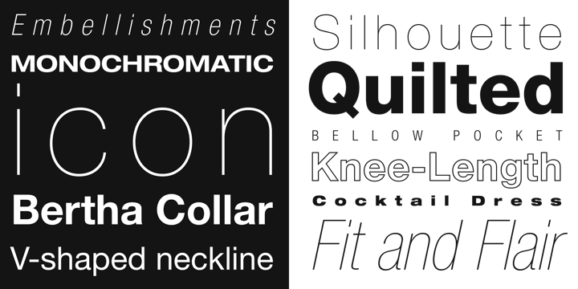 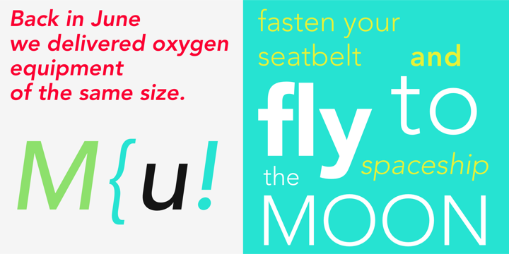 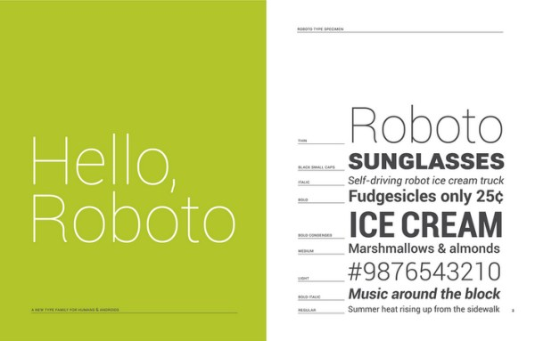 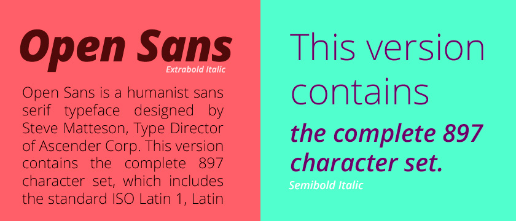
字体重量和样式丰富的字体集在页面设计时有更大的选择空间和丰富的组合方式。不同重量和风格的字体通常有不同的含义，例如以最简单的斜体（Italic）为例，它的使用含义可表达在正文中的“强调”，例如强调某个词、某个专门定义、特定名称；也可以表达引言；而粗体大写通常是表达强烈的标题性文字。
不同字体的组合可以体现更加舒适的阅读体验，在下面的例子里，我只使用了一种字重的：
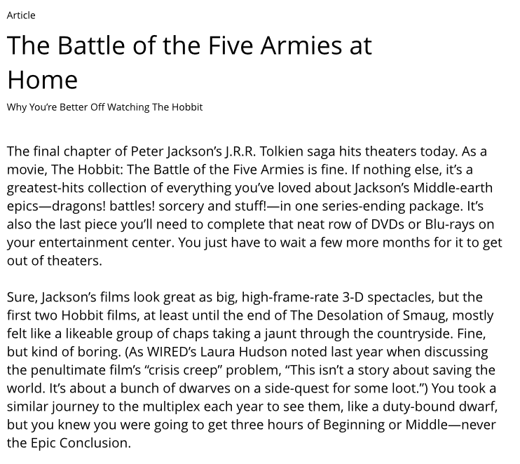
当我们学会不同字重的组合时，阅读体验将会变得更加好，用户从字重中就可以识别文字的含义。
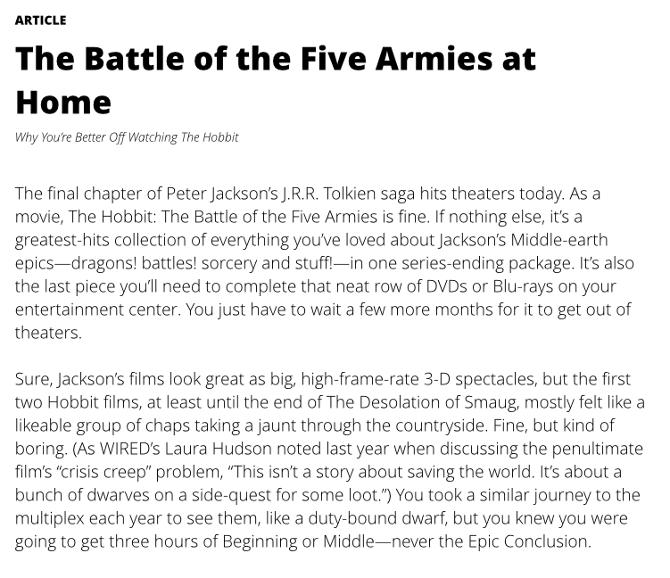
这里有一个小技巧，大标题通常使用超粗字重，超粗字重适当缩小字母间距效果会更加紧凑，在CSS中定义letter-spacing一定量的负值，例如下面的对比：
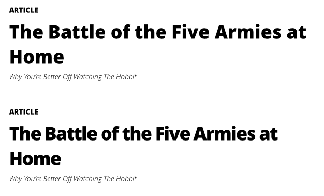
使用颜色
颜色通常是一个初级设计师比较头疼的事情，我们对于色彩的敏感往往不能够很好地对色彩进行搭配，但通过一定的练习也可以达到好的效果，这里我的练习方法是填色练习。
首先，下载一个UI模板的PSD文件，下面是一个完全没有颜色的PSD：
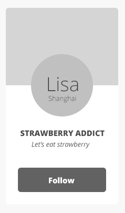
找一张你喜欢的图片用蒙板的方式放在框体上面，变成下面的样子：
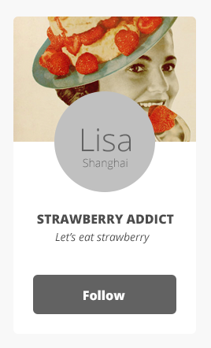
从图片上吸附两种主色，一冷一热，进行填充，就变成了下面的样子：
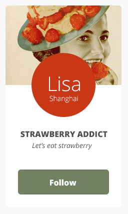
反复重复锻炼，可以形成下面多个色彩搭配的，用这样的方式可以帮助你培养你对色彩的配搭感觉。
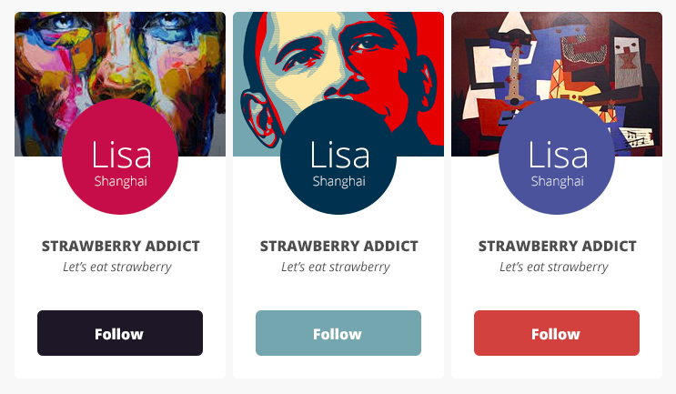
只要我们不那么贪心（使用多于两种的颜色），从艺术作品中借鉴某些颜色的配搭，选取冷热两种主色，再加上不同灰度的黑色作为辅色，或者冷热主色的不同透明度的色阶，一个简单的网页界面色彩的管理是足够胜任的，如下面这个界面的设计：
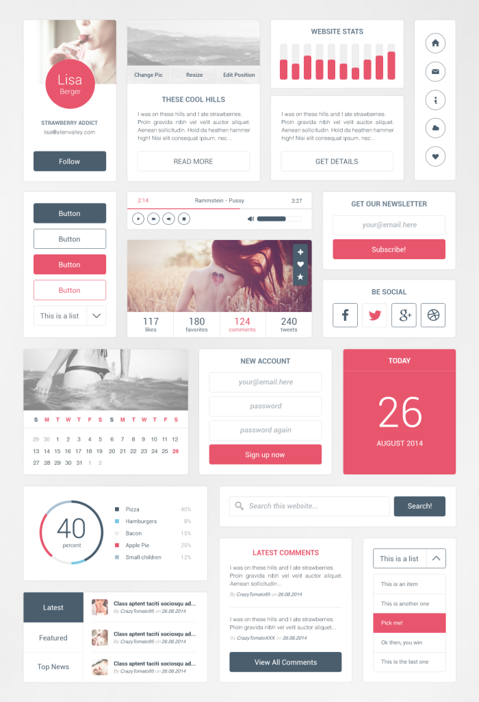
写在最后
我并不像很多设计师是从工业设计开始设计生涯的，也并没有接触过专业的美术基础教育，在我的工作里也并不需要我进行细节的视觉设计，但是我相信，基础视觉设计技能是谈论设计的基础。同时我也看到，很多视觉设计师并没有养成“干净”的设计习惯，对于留白、字体、栅格的使用都非常随意，我相信本篇的内容对他们也会有些帮助。
因此，一个非专业视觉设计师视觉方面的修炼，就是以下五步：
- 练习草绘；
- 严格使用网格（对TM齐）；
- 练习留白；
- 练习字体组合表达内容；
- 练习色彩搭配。